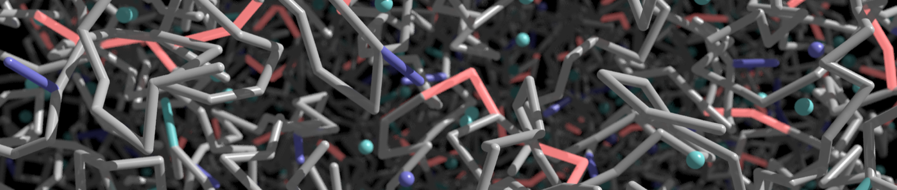

欢迎来到计算软物质和生命物质实验室！
本课题组从统计物理与计算模拟的视角出发，研究软物质与生命体系的微观结构与动力学行为。 关注的问题包括熵驱动的自组装、高分子与网络材料的力学、生物分子凝聚体的调控机制、以及活性与驱动体系的非平衡物理。 我们致力于将基础物理与材料、生物医学等应用场景相结合，发展可解释、可预测的理论与模型。
我们倡导兴趣驱动、开放分享、跨学科合作的科研环境。 欢迎对统计力学、数值模拟或生命物质物理感兴趣的同学与我们交流。
联系我们
广东省深圳市南山区学苑大道 1088 号
南方科技大学 理学院楼 P5094，邮编 518055
如有合作意向、招生咨询或相关问题，欢迎联系：
xiaxy@sustech.edu.cn
新闻
- 2026 年 1 月：CSLM Lab 于南方科技大学正式成立！博士生与博士后正在招募，详见 职位空缺。